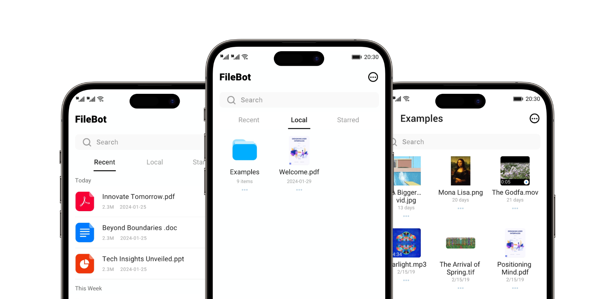

FileBot: Recorder & Scanner & PDF
A feature-rich and powerful file manager to meet your diverse needs.

Voice Recorder
Capture crystal-clear audio with our voice recorder. Perfect for meetings, lectures, and personal notes.
Screen Recorder
Record your screen in a smooth and efficient way. Suitable for tutorials, demonstrations, and gameplay recording.
PDF Scanner
Transform physical documents into high-quality digital PDFs.
Docs Viewer
View and manage all your documents in one place with our document viewer.